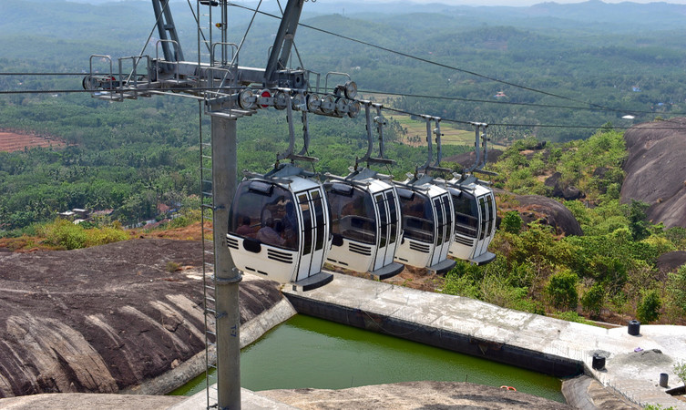
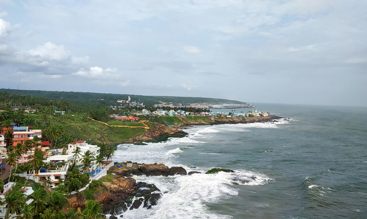

ASHTAMUDI LAKE

The incredible beauty of Kerala, Ashtamudi lake has eight branches that coincide with the Arabian sea after converging into one channel, hence the name Ashtamudi, where Ashta means eight and mudi means branch. Spell-binding the travelers with its inarticulate and persuasive charm, this second largest lake in Kerala is one of the most popular places to visit in Kollam. Beautifying the banks of this lake, palm and coconut trees, intensifies the fascinating experience of calm and lush green waterways. Thriving harmoniously in Kollam district of Kerala, Ashtamudi lake immerses the tourists with tremendous pleasure by granting them an experience of houseboat cruising.
KOLLAM ADVENTURE PARK

The center of leisure activities for people with no age limit. A must-go-to place for luxurious boating, picnic, and the art museum among other tourist places in Kollam. The park encloses a place possessing numerous rides and impressive scenery that makes it ideal for a family picnic. With the alluring backwaters, travelers can enjoy houseboat cruises, deluxe boats, and speedboats in the midst of serene waters. Apart from the boat club, children’s park, this place covers enticements such as a 200-year-old government guest house and Yatri Nivas. Also, on the establishment is the art museum, where painting lovers seizes a chance to admire exhibit paintings collected from different parts of the country. And the fun doesn’t end here, a nature dweller can visit the mangroves close to the park to spot endangered species of bushes.
KOLLAM BEACH

The beauty of Kollam beach makes it a vantage point to unwind and relish its picturesque landscape. The mysterious view of natural blue waters blending with the infinite bright sky bequeaths the sightseers amazed. The Kollam beach calls to rejuvenate the mind and body, energising the tourists with its cultural and spiritual aura. This beach is famous among some travelers with the name of Mahatma Gandhi Beach and soothes wanderers with lush green, calm backwaters, and endless water activities. Things to do - Beach fun activities, Swimming, visit nearby Mahatma Gandhi Park.
THANGASSERY LIGHT HOUSE

Climb up the 200 steps to enjoy the panoramic view of the Arabian sea and Kollam. Mounting grandly above the coconut trees, Tangasseri Lighthouse is the second tallest lighthouse with a height of 140 feet on the coast of Kerala. The red and white painted bands around the lighthouse make it marvelous and dignified. Moreover, witnessing the pleasant sunset from the top of the lighthouse is a breathtaking experience. Attracting tourists towards its enchanting beauty and calming view, an evening to the lighthouse is worth visiting among places to see in Kollam. Things to do - Climb up and enjoy the view from the lighthouse, Relax at Thangassery beach, Pump the adrenaline rush with scuba diving and surfing, go fishing.
THIRUMULLAVARAM BEACH

An unexplored beach of Kerala where golden sand surrounds clear blue water and the serene seashore is embellished by coconut and palm trees. The delightful view of sun-soaked sand, soothing blue sea, and lush green palm never fail to attract tourists. Holding a place in the list of places to see in Kollam, tourists visit this place to get immersed in the calm and peaceful surroundings. Being one of the isolated beaches of Kerala, the beauty of the beach is still unimpaired. Just like any other beach, travelers relax and enjoy swimming and sun-bathing. Things to do - Sit back and relax, Swimming, Sun-bathing, Visit nearby Vishnu temple.